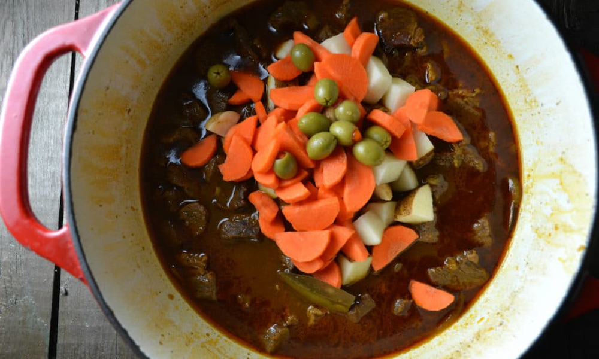

Home
Spanish
Japanese
Cajun
Cuban
Puerto Rican
Puerto Rican Main Recipe
CARNE GUISADA (PUERTO RICAN BEEF STEW)

INGREDIENTS LIST
INGREDIENTS:
1 tablespoon olive oil
2 1/2 lbs chuck or round roast, cut into 1/2" cubes or other stew meat
2 teaspoons Adobo seasoning
1/4 cup sofrito
1 medium onion sliced
2 teaspoons Sazon seasoning with annatto
1 teaspoon powdered chicken bouillon
32 oz. box unsalted beef broth
1/3 cup dry red wine like Merlot or Cabernet Sauvignon
1/2 cup tomato sauce low sodium is best
3 dried bay leaves or 1 fresh
1/2 teaspoon dried Italian seasoning or dried oregano
10 pimento stuffed olives
1 cup carrot, sliced into thick rings
1 cup diced potatoes
1-2 teaspoons red wine vinegar apple cider vinegar works too!
Comment Form
is loading comments...